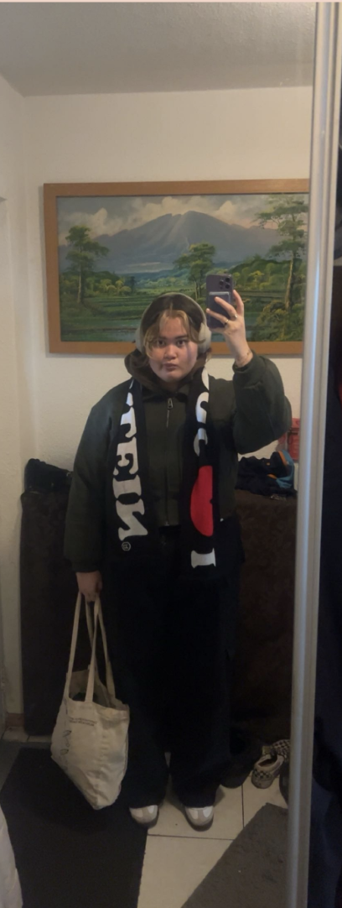

Duurzaam maar toch fashion
Geef je tweedehands jas een nieuwe look door er een sjaal aan toe te voegen. Door een bijpassende sjaal om de kraag te wikkelen, verberg je het feit dat de jas tweedehands is. De combinatie van de jas en de sjaal creëert een coole en unieke uitstraling waardoor niemand zal merken dat het een tweedehands item is.
Jeans
Het vinden van goede tweedehands jeans is vaak verrassend gemakkelijk, omdat jeans als een duurzaam en tijdloos kledingstuk lang meegaat. Bovendien is jeans een tijdloze keuze die bij elke gelegenheid past en altijd in de mode blijft, waardoor je investeert in zowel kwaliteit als stijl. Dus waarom niet op zoek gaan naar die perfecte tweedehands jeans waar je lang van kunt genieten en die je moeiteloos kunt combineren met elke outfit?
Accessoires
Vintage accessoires kunnen een leuke en unieke touch geven aan je outfit. Of het nu gaat om een vintage handtas, zonnebril of sieraden, deze items brengen een nostalgische charme en individualiteit met zich mee. Het dragen van vintage accessoires is een geweldige manier om je persoonlijke stijl te uiten en een statement te maken zonder een fortuin uit te geven aan gloednieuwe items.